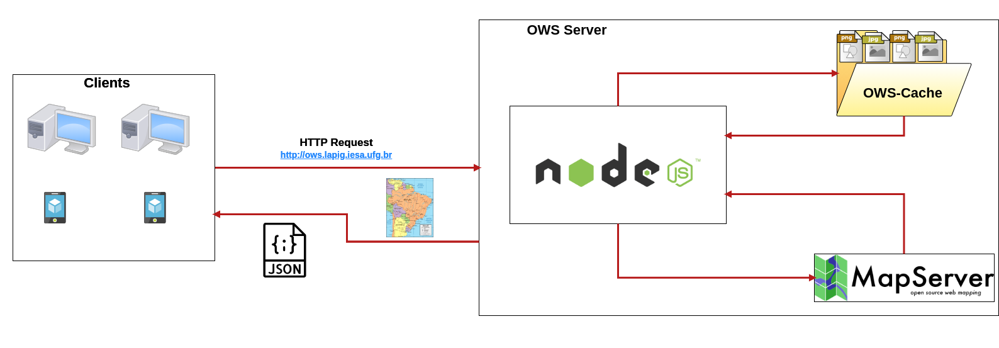
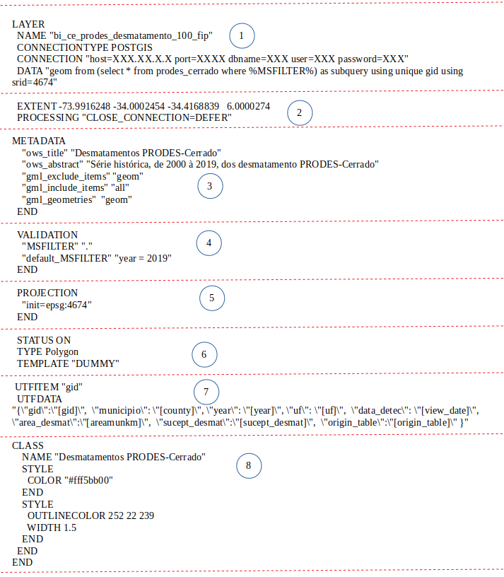
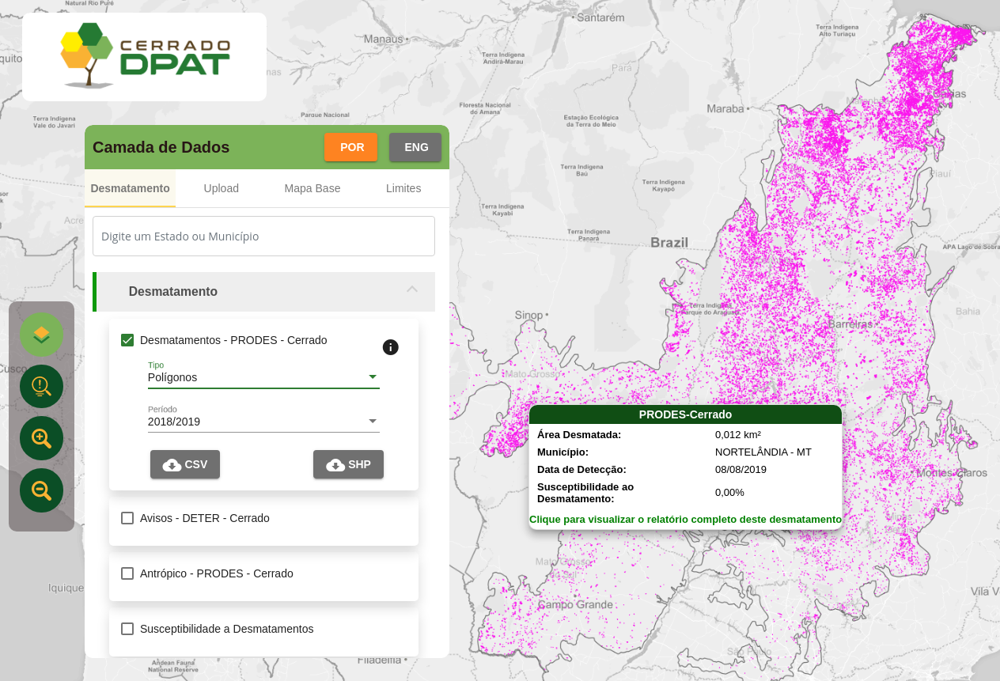
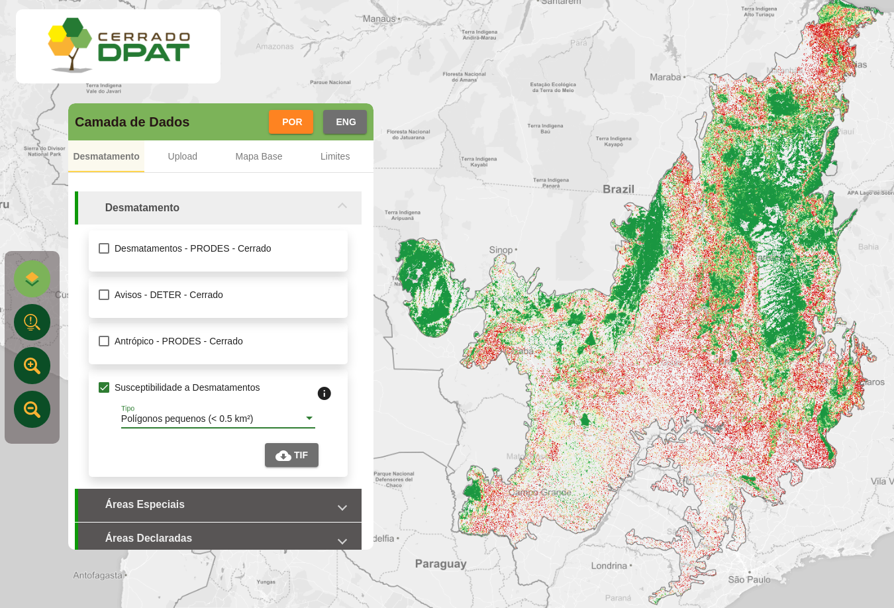

Servidor de Mapas
O OWS Server é responsável por encaminhar as requisições ao Mapserver a fim de gerar a visualização dos dados geográficos e organizar para que as imagens geradas sejam armazenadas em cache para melhorar o desempenho em requisições futuras. O código-fonte para o OWS Server se encontra no repositório Github do LAPIG/UFG.

Devido a facilidade em lidar com a arquitetura de WebServices, o código em NodeJS foi criado para também realizar o controle de cache das imagens processadas pelo Mapserver. Para tal, uma customização foi criada a fim de se associar uma chave (cacheKey) a cada imagem de cada camada configurada no Mapserver. Esta imagem é armazenada em um sistema de arquivos (pasta) chamada OWS-Cache, de modo que, em futuras requisições para uma determinada imagem, é verificada se a imagem já existe na OWS-Cache ou não. Caso exista, a imagem é retornada na requisição, caso não exista, o código NodeJS envia a requisição para o Mapserver processar e gerá-la, armazenando-a no OWS-Cache. O método que realiza esta verificação é o método OgcServer.ows que faz parte do Controlador da aplicação em NodeJS.
src/controllers/ogc-server.js
OgcServer.ows = function(request, response) {
var params = Internal.getParams(request);
response.setHeader("Access-Control-Allow-Origin", "*");
Internal.setHeaders(params, request, response);
var cacheKey = Internal.getCacheKey(params);
if(cacheKey && (config['cacheEnable'] || Internal.isWmsGetCap(params)) ) {
Internal.doRequestWithCache(cacheKey, params, response);
} else {
Internal.doRequest(params, response);
}
}
Esta customização pode ser encontrada no código NodeJS no repositório específico para o código NodeJS no Github. A configuração da pasta onde serão gerados os caches é feita no arquivo config.js na linha 41 através da variável cacheDir.
Serviço de interoperabilidade
A interoperabilidade é uma tecnologia que possibilita o compartilhamento de dados entre sistemas, independente do local físico de armazenamento e da tecnologia utilizada em cada servidor de dados. No Geoprocessamento, a interoperabilidade pode ser aplicada para promover o intercâmbio de dados geográficos entre diferentes softwares de SIG. O OCG (Open Geospatial Consortium, Inc.) é uma organização que tem como objetivo principal viabilizar o intercâmbio de dados geográficos através da criação de especificações que simplificam a interação entre diferentes fontes de dados. Desta forma, os principais serviços especificados pela OGC são:
- Web Map Service - WMS: produz mapas dinâmicos partir de dados georreferenciados em um servidor remoto. Esses mapas são geralmente apresentados no formato de figura (PNG, JPEG ou GIF). Também é possível consultar os atributos dos elementos que compõem os mapas.
- Web Feature Service - WFS: define um serviço para recuperação de objetos (features) espaciais. Diferentemente do WMS, o WFS devolve o dado e não uma "figura" do dado.
- Tile Map Service - TMS: define um serviço que fornece imagens de dados geográficos a partir de URLs para porções (tiles) definidas pelo conjunto de coordenadas {z} {x} {y} do dado georeferenciado. O TMS é mais amplamente suportado pelos navegadores Web.
- UTFGrid: usam uma combinação de codificação JSON e arquivos grid ASCII que estão ao lado de cada bloco de imagem do mapa. Desta forma, uma tabela de pesquisa em JSON fornece o conjunto completo de atributos que viabiliza a devolução de dados sobre aquele grid, permitindo interatividade com o mapas.
Desta forma, uma representação visual da interoperabilidade entre serviços pode ser encontrada no link e apresentada abaixo.

Por fim, a tabela abaixo apresenta os tipos de serviços fornecidos pelo Cerrado DPAT bem como suas URLs de acesso, onde <ows_host> representa o domínio onde o OWS Server está hospedado e <layername> representa a camada configurada no Mapfile:
| Tipo de Requisição | Fonte | Descrição | URL |
|---|---|---|---|
| WMS | OWS Server | Retorna uma imagem com a legenda da camada (<layername>) especificada no mapfile.. |
https://<ows_host>/ows?TRANSPARENT=TRUE&VERSION=1.1.1&SERVICE=WMS&REQUEST=GetLegendGraphic&layer=<layername>&format=image/png |
| WMS | OWS Server | Retorna uma imagem com a composição de camadas identificadas pelas layers, com o foco no enquadramento para a geometria definida pela função ST_EXTENT do Postgis. Por fim, o parâmetro <sql_applied_on_MSFILTER> especifica a query que deverá ser aplicada para filtrar dados em todas as camadas que possuam MSFILTER em sua configuração no Mapserver. |
https://<ows_host>/ows?SERVICE=WMS&REQUEST=GetMap&VERSION=1.1.1&layers=<layername1>,<layername2>, ... &bbox=<bounding_box>&TRANSPARENT=TRUE&srs=EPSG:4674&width=768&height=768&format=image/png&styles=&ENHANCE=TRUE&MSFILTER=<sql_applied_on_MSFILTER> |
| TMS | OWS Server | Retorna uma imagem com a composição de camadas identificadas pelas layers, com o foco no enquadramento para a geometria definida pela função ST_EXTENT do Postgis. Por fim, o parâmetro <sql_applied_on_MSFILTER> especifica a query que deverá ser aplicada para filtrar dados em todas as camadas que possuam MSFILTER em sua configuração no Mapserver. |
https://<ows_host>/ows?layers=<layername>&MSFILTER=<sql_applied_on_MSFILTER>&mode=tile&tile=<{z}>+<{x}>+<{y}>&tilemode=gmap&map.imagetype=png |
| TMS | Mapbox | Retorna a composição do mapa Geopolítico fornecido pela Mapbox | https://api.tiles.mapbox.com/v4/mapbox.light/<{z}>/<{x}>/<{y}>.png?access_token=<chave_de_acesso>. |
| TMS | Google Maps | Retorna a composição de imagens do mapa fornecido pela API do GoogleMaps. | https://mt{0-3}.google.com/vt/lyrs=m&x=<{x}>&y=<{y}>&z=<{z}> |
| TMS | World Shaded Relief | Retorna a composição de mapas de Relevo fornecido pelo ArcGis. | https://server.arcgisonline.com/ArcGIS/rest/services/World_Shaded_Relief/MapServer/tile/<{z}>/<{y}>/<{x}> |
| UTFGrid | OWS Server | Retorna os dados referentes aos atributos definidos na camada fornecida pelo OWS Server para o |
https://<ows_host>/ows?layers=<layername>&MSFILTER=<sql_applied_on_MSFILTER>&mode=tile&tile=<{z}>+<{x}>+<{y}>&tilemode=gmap&map.imagetype=utfgrid |
Processo de atualização
Um dado geográfico é disponbilizado pelo Mapserver como uma camada. Assim como abordado na seção de serviços de interoperabilidade os dados devem estar armazenados em uma pasta de catálogo dos dados (pasta catalog) configurável no arquivo config.js através da variável cacheDir.
O Mapserver utiliza um arquivo de configuração para renderização de dados geoespaciais chamado de Mapfile. O principal objetivo do Mapfile é definir as camadas que podem ser "desenhadas" pelo Mapserver, como ler estes dados (uma vez que eles podem ser vetores ou matrizes) e como renderizá-los, definindo cores, símbolos, rótulos, legendas e etc. Desta forma, o Mapfile inclui informações sobre:
- Quais camadas devem ser renderizadas;
- Onde está o foco geográfico do mapa;
- Qual projeção está sendo usada;
- Qual o formato gráfico de saída;
- Configuração da legenda e a escala utilizada;
A figura abaixo apresenta o Mapfile da camada dos desmatamentos PRODES-Cerrado presente no Cerrado DPAT. Esta mesma figura pode representar um exemplo prático para criação de um Mapfile com conexão com Banco de Dados e assim obter dados em formato vetorial. Portanto, segue a especificação de cada item destacado na imagem:

-
Apresenta o nome da camada, bem como a fonte de onde este dado será carregado. No exemplo este dado é acessado pela comunicação com Postgis devidamente autenticado;
-
Determina o foco do dado para a extensão do Cerrado;
-
Apresenta os metadados da camada;
-
Cria uma variável para validação e filtragem dos dados por meio do runtime substitution;
-
Define a projeção do dado apresentado;
-
Define o tipo do dado apresentado;
-
Define a estrutura dos dados que são enviados via UTFGrid. Para tal é importante definir um identificador único (UTFITEM) e os dados a serem enviados através da tupla {"chave_acesso" : "coluna_banco_dados"} em UTFDATA que irão compor o JSON gerado.
-
Define uma classificação para os dados a fim de customizar a coloração de acordo com um critério. A classificação estabelecida também irá compor a legenda.
Um segundo tipo de camada de dados presente no Cerrado DPAT é oriundo de dados matriciais, ou seja, imagens TIF. Portanto, para criação de um Mapfile para um TIF é necessário alterar as sessões (1) - onde deve-se apresentar a localização do arquivo TIF no sistema de arquivos através da diretiva 'DATA'; (6) - alterar para o tipo de dados Raster e (8), onde o critério para classificação se dá de acordo com o valor do pixel em um ponto. Portanto, o Mapfile para arquivos matriciais se dá conforme imagem abaixo.

Por fim, o Mapfile utilizado para disponibilizar todas as camadas presentes no Cerrado DPAT está na pasta compartilhada do projeto no link.
Disponibilização da camada no Application Server
Após a criação da camada no OWS Server, para que esta camada seja apresentada na interface Web do Cerrado DPAT é necessária a sua inserção no Application Server. A fim de facilitar a disponibilização de diversas camadas, foi criada uma estrutura nomeada de descriptor que descreve as principais configurações de uma camada a ser apresentada no Cerrado DPAT, tais como: filtros de dados, tipos diferentes de camadas e outros. A estrutura completa do descriptor encontra-se no repositório do projeto no Github, especificamente no arquivo map.js.
Segue abaixo as configurações das camadas apresentadas acima dentro da estrutura do descriptor. Primeiramente, iremos disponibilizar a camada bi_ce_prodes_desmatamento_100_fip que representa um dado vetorial no qual é possível aplicar diversos filtros. A variável languageJson representa o acesso ao arquivo .json responsável pela internacionalização da aplicação, ou seja, apresenta textos em diferentes idiomas de acordo com o valor recebido como parâmetro language.
Controller.descriptor = function (request, response) {
var language = request.param('lang')
var result = {
regionFilterDefault: "",
type: languageJson["descriptor"]["type_of_information_label"][language],
groups: [{
id: "desmatamento",
label: languageJson["descriptor"]["desmatamento"]["label"][language],
group_expanded: true,
layers: [{
id: "desmatamento_prodes",
label: languageJson["descriptor"]["desmatamento"]["layers"]["desmatamento_prodes"]["label"][language],
visible: true,
selectedType: "bi_ce_prodes_desmatamento_100_fip",
metadata: languageJson["descriptor"]["desmatamento"]["layers"]["desmatamento_prodes"]['metadata'],
types: [
{
value: "bi_ce_prodes_desmatamento_100_fip",
Viewvalue: languageJson["descriptor"]["desmatamento"]["layers"]["desmatamento_prodes"]["types"]["bi_ce_prodes_desmatamento_100_fip"]["view_value"][language],
opacity: 1,
order: 1,
download: ['csv', 'shp'],
regionFilter: true,
timeLabel: languageJson["descriptor"]["desmatamento"]["layers"]["desmatamento_prodes"]["types"]["bi_ce_prodes_desmatamento_100_fip"]["timelabel"][language],
timeSelected: "year=2019",
timeHandler: "msfilter",
times: [{
value: "year=2002",
Viewvalue: "2000/2002",
year: 2002
},
{
value: "year=2004",
Viewvalue: "2002/2004",
year: 2004
},
{
value: "year=2006",
Viewvalue: "2004/2006",
year: 2006
},
{
value: "year=2008",
Viewvalue: "2006/2008",
year: 2008
},
{
value: "year=2010",
Viewvalue: "2008/2010",
year: 2010
},
{
value: "year=2012",
Viewvalue: "2010/2012",
year: 2012
},
{
value: "year=2013",
Viewvalue: "2012/2013",
year: 2013
},
{
value: "year=2014",
Viewvalue: "2013/2014",
year: 2014
},
{
value: "year=2015",
Viewvalue: "2014/2015",
year: 2015
},
{
value: "year=2016",
Viewvalue: "2015/2016",
year: 2016
},
{
value: "year=2017",
Viewvalue: "2016/2017",
year: 2017
},
{
value: "year=2018",
Viewvalue: "2017/2018",
year: 2018
},
{
value: "year=2019",
Viewvalue: "2018/2019",
year: 2019
}
}]
},
{
id: "susceptibilidade",
label: languageJson["descriptor"]["desmatamento"]["layers"]["susceptibilidade"]["label"][language],
visible: false,
selectedType: "bi_ce_susceptibilidade_desmatamento_menores_100_na_lapig",
metadata: languageJson["descriptor"]["desmatamento"]["layers"]["susceptibilidade"]['metadata'],
types: [{
value: "bi_ce_susceptibilidade_desmatamento_menores_100_na_lapig",
Viewvalue: languageJson["descriptor"]["desmatamento"]["layers"]["susceptibilidade"]["types"]["bi_ce_susceptibilidade_desmatamento_menores_100_na_lapig"]["view_value"][language],
order: 5,
download: ['tif'],
opacity: 1
},
{
value: "bi_ce_susceptibilidade_desmatamento_maiores_100_na_lapig",
Viewvalue: languageJson["descriptor"]["desmatamento"]["layers"]["susceptibilidade"]["types"]["bi_ce_susceptibilidade_desmatamento_maiores_100_na_lapig"]["view_value"][language],
order: 5,
download: ['tif'],
opacity: 1
}
]
}
}]
}]
};
response.send(result);
response.end();
};
Os diversos parâmetros setados na variável result são interpretados pela aplicação Front-end em Angular, de modo a criar a interface apresentada na imagem abaixo. Dentre estes parâmetros, destaca-se o layers que irão indicar quais camadas estarão no card Desmatamento PRODES-Cerrado. No exemplo acima, está selecionada a camada bi_ce_prodes_desmatamento_100_fip através da variável selectedType, e logo abaixo apresenta-se o vetor types que apresenta os tipos de camadas PRODES-Cerrado estão disponíveis. Por fim, destaca-se o vetor do parâmetro times, que apresenta diversos filtros que podem ser aplicados em um tipo de layer específico. No exemplo acima, ele é utilizado para filtrar os polígonos por ano, aplicando a query apresentada em value (de cada filtro) como parâmetro MSFILTER na camada descrita no Mapserver.

Por fim, o segundo exemplo apresenta a disponibilização da camada bi_ce_susceptibilidade_desmatamento_menores_100_na_lapig criada acima a partir de uma imagem Raster no formato TIF. O grande diferencial desta é a impossibilidade de aplicar quaisquer filtro na imagem por se tratar de um dado matricial estático, logo o parâmetro times não é utilizado. Portanto, de acordo com a imagem abaixo, que apresenta a estrutura criada no Front-end para esta representação no descriptor.
